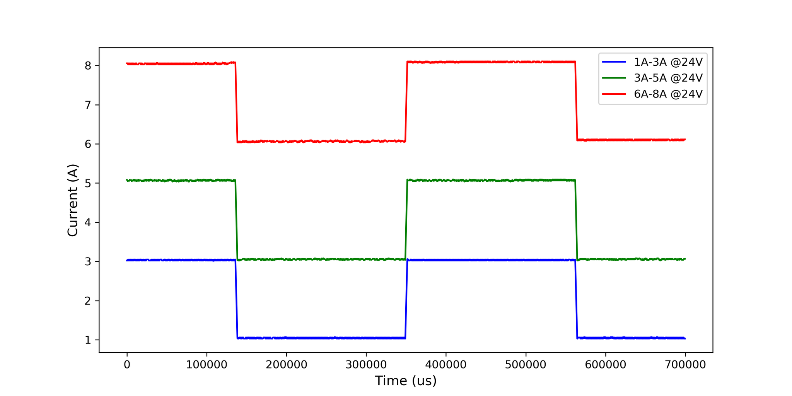

Testing & Performance
Calibration & Accuracy
The precision of the electronic load's current and voltage measurements, as well as its set current accuracy, were tested against the Sanwa PC7000 multimeter. The following tables present the results of these measurements.
Accuracy of set and measured current values
| Set Value [A] | Load Measurement [A] | Multimeter Measurement [A] |
|---|---|---|
| 0.1 | 0.104 | 0.1032 ± 0.0029 |
| 0.2 | 0.203 | 0.2024 ± 0.0037 |
| 0.3 | 0.300 | 0.3000 ± 0.0044 |
| 0.4 | 0.406 | 0.4051 ± 0.0053 |
| 0.5 | 0.500 | 0.4997 ± 0.0060 |
| 0.6 | 0.602 | 0.6020 ± 0.0069 |
| 0.7 | 0.702 | 0.7020 ± 0.0077 |
| 0.8 | 0.800 | 0.8000 ± 0.0084 |
| 0.9 | 0.904 | 0.9038 ± 0.0093 |
| 1.0 | 1.007 | 1.0065 ± 0.0101 |
| 2.0 | 2.007 | 2.0070 ± 0.0181 |
| 3.0 | 3.006 | 3.0057 ± 0.0261 |
| 4.0 | 4.003 | 4.0022 ± 0.0341 |
| 5.0 | 5.002 | 5.0007 ± 0.0421 |
| 6.0 | 6.001 | 5.996 ± 0.068 |
| 7.0 | 6.998 | 6.997 ± 0.076 |
| 8.0 | 7.998 | 7.990 ± 0.084 |
Accuracy of voltage measurements
| Load Measurement [V] | Multimeter Measurement [V] |
|---|---|
| 1.002 | 1.0022 ± 0.0006 |
| 2.002 | 2.0029 ± 0.0009 |
| 3.004 | 3.0043 ± 0.0012 |
| 4.004 | 4.0039 ± 0.0015 |
| 5.006 | 5.0058 ± 0.0018 |
| 8.004 | 8.004 ± 0.006 |
| 10.01 | 10.007 ± 0.007 |
| 12.01 | 12.008 ± 0.007 |
| 14.01 | 14.010 ± 0.008 |
| 16.01 | 16.004 ± 0.009 |
| 18.01 | 18.007 ± 0.010 |
| 20.01 | 20.008 ± 0.011 |
| 25.01 | 25.011 ± 0.013 |
| 30.02 | 30.016 ± 0.015 |
| 35.02 | 35.019 ± 0.017 |
| 40.02 | 40.019 ± 0.019 |
| 45.02 | 45.023 ± 0.021 |
| 50.01 | 50.012 ± 0.023 |
Conclusion ✅
The current values measured by the electronic load did not deviate from the set value by more than 7 mA. All measurements taken by the electronic load are within the range of values measured by the multimeter, considering the multimeter's measurement error.
Thermal Performance
At full load (300 W for short periods), the device maintained safe thermal conditions due to a heatsink and active fan cooling. Continuous operation at 200 W is sustainable.
Step Response
Step changes in load (1–3 A, 3–5 A, 6–8 A) showed fast transitions with no overshoot or oscillation. This confirms stable control loop performance.

Battery Testing
The battery test mode successfully measured capacity by monitoring discharge current and cutoff voltage. Data was logged and visualized in the PC application.
Tools Used for Testing
- Sanwa PC7000 Multimeter
- Rigol MSO2102A Oscilloscope
- AXIOMET AX-3005PQ Power Supplies